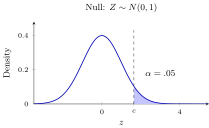
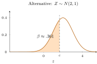
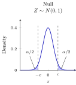
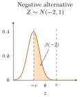
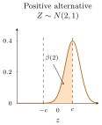

Source and provenance. Most of the contents of the Part VII lectures are taken from Bickel and Doksum (BD), Mathematical Statistics: Basic Ideas and Selected Topics, Volume I, second edition [2], and adapted to the course notation. The Part VII lectures are newly prepared; they are not the original lecture notes from previous years. Additional explanations, examples, and figures are identified and credited below.
Lecture guide. This is the first of two lectures for Part VII: Testing and confidence sets. The proof of Theorem 1 is low priority, as assigned by the instructor. The other priority labels follow the course reading conventions.
Reading.
The main reference is Bickel and Doksum (BD), Volume I, second edition (2001): Section 4.1, pp. 213–223; Section 4.2, pp. 223–227; and selected material from Section 4.3, pp. 227–230 [2]. Definitions and proofs are restated in the course notation; textbook numbers below refer to this edition. Additional examples and exercises are credited where used.
An estimate answers “how large is the parameter?” A test asks whether the data give enough evidence against a specified claim. We control false rejection under the null, study power under the alternative, and use a \(p\)-value to locate the observed statistic in its null distribution.
Sections 1–4 compare two fully specified distributions: simple versus simple hypotheses. They develop errors, a Normal example, \(p\)-values, and Neyman–Pearson.
Section 5 then allows sets of distributions, explains uniform error control and UMP tests, and introduces generalized likelihood ratios.
Recap from earlier lecturesFrom Lectures 6, 8 and 10: earlier ideas used here · 1 min
Reminder only: this block introduces no new exam requirements.
Tests as decisions. A test maps data to reject or do not reject; risk averages a loss under a fixed model. Used in error control.
Likelihood. With data fixed, the likelihood compares parameter values using their densities or masses. Used in the Neyman–Pearson lemma.
Normal approximation. A centered, standardized sample mean is asymptotically Normal under the CLT assumptions. Used to distinguish exact from approximate calibration.
Learning goals
Specify hypotheses, a test statistic, and a rejection region.
Distinguish significance level, size, power, and the two error probabilities.
Calculate and interpret one-sided and two-sided \(p\)-values.
Use the Neyman–Pearson lemma and distinguish simple from generalized likelihood ratios; its proof is optional reading.
1. Hypotheses, decisions, and errors
Start with two fully specified distributions for the data \(X\): \[H_0:P=P_0 \qquad\text{against}\qquad H_1:P=P_1.\] The null hypothesis is the claim whose false rejection we will control. The alternative hypothesis describes the departures we want to detect. Choosing the model and the direction of the alternative is part of formulating the question, before examining the result.
A hypothesis is simple if it specifies one distribution of the data, and composite if it allows more than one.
For i.i.d. \(N(\mu,\sigma^2)\) data with known \(\sigma^2>0\), comparing \(\mu=0\) with \(\mu=1\) is a simple-versus-simple problem. Each hypothesis specifies one distribution of the whole sample. We first work in this setting; Section 5 develops composite hypotheses.
Decision. A nonrandomized test is a measurable function \(\varphi:\mathcal X\to\{0,1\}\). The decision \(\varphi(X)=1\) means reject \(H_0\); \(\varphi(X)=0\) means do not reject.
Rejection region. Its rejection region is \(R=\{x:\varphi(x)=1\}\).
Cutoff and direction. Often \(R=\{x:T(x)\ge c\}\) for a statistic \(T\) and a critical value \(c\). The statistic alone does not specify a test: its cutoff and rejection direction matter.
| \(H_0\) true | \(H_1\) true | |
|---|---|---|
| Reject \(H_0\) | Type I error | Correct detection |
| Do not reject \(H_0\) | Correct nonrejection | Type II error |
For a test \(\varphi\), its size and power are, respectively, \[P_0\{\varphi(X)=1\},\qquad P_1\{\varphi(X)=1\}.\] The size is the Type I error probability. The Type II error probability is \(\beta=P_1\{\varphi(X)=0\}=1-\text{power}\). For a specified \(0<\alpha<1\), the test has level \(\alpha\) if its size is at most \(\alpha\).
Notation. BD writes \(\beta\) for the power function; here \(\pi\) denotes power and \(\beta\) denotes Type II error.
Size and level. The size is a property of the rule; \(\alpha\) is its chosen error budget. A size-\(0.03\) test is a level-\(0.05\) test.
Different distributions. The two errors use different distributions: \(P_0\) for false rejection and \(P_1\) for missed detection. Their probabilities need not add to one.
Instructor’s NoteA false-alarm budget
Think of a smoke alarm. Lowering the trigger threshold helps detect small fires, but also produces more false alarms. The significance level sets a false-alarm budget. Among rules that respect that budget, we want an alarm that is sensitive to the fires we care about. An alarm that never rings has no false alarms and is still useless.
2. An example of normal distribution
Following BD Example 4.1.4, pp. 218–219, let \(X_1,\ldots,X_n\) be i.i.d. \(N(\mu,\sigma^2)\) with known \(\sigma>0\).
Fix \(\mu_1>\mu_0\) and consider the two simple hypotheses \(H_0:\mu=\mu_0\) versus \(H_1:\mu=\mu_1\).
Write \(\Phi\) for the standard Normal cdf and \(z_q=\Phi^{-1}(q)\). Define \[Z=\frac{\sqrt n(\overline X-\mu_0)}{\sigma},\qquad d=\frac{\sqrt n(\mu-\mu_0)}{\sigma}.\] Under \(H_0\), \(Z\sim N(0,1)\); under \(H_1\), \(Z\sim N(d_1,1)\) with \(d_1=\sqrt n(\mu_1-\mu_0)/\sigma>0\).
More generally, the rejection probability of \(\varphi_c=\mathbf{1}\{Z\ge c\}\) at a given \(\mu\) is
\[\pi_c(\mu)=1-\Phi(c-d).\]
(1)In particular, the Type I error probability is \(1-\Phi(c)\) and power is \(1-\Phi(c-d_1)\). Thus \(c=z_{1-\alpha}\) gives size exactly \(\alpha\), and we reject when
\[\overline X\ge\mu_0+z_{1-\alpha}\frac{\sigma}{\sqrt n}.\]
(2)Writing the fixed alternative as \(\mu_1=\mu_0+\Delta\), \(\Delta>0\), power is \(1-\Phi(z_{1-\alpha}-\sqrt n\Delta/\sigma)\). More observations increase this power. For fixed \(n\), however, power tends to \(\alpha\) as \(\Delta\downarrow0\): arbitrarily small departures remain difficult to detect.


BD Example 4.1.3, pp. 215–218, uses \(S\sim\operatorname{Bin}(10,\theta)\) and reference probability \(\theta_0=.3\). Start with the simple hypotheses \(H_0:\theta=.3\) and \(H_1:\theta=.5\), rejecting for \(S\ge k\). For any specified \(\theta\), the rejection probability is \[\pi_k(\theta)=\sum_{j=k}^{10}{10\choose j}\theta^j(1-\theta)^{10-j}.\] Direct summation gives \[P_{.3}(S\ge5)\approx.15027,\qquad P_{.3}(S\ge6)\approx.04735.\] The smallest integer cutoff for level \(.05\) is \(k=6\). Its size is \(.04735\), and its power at \(\theta=.5\) is only \(P_{.5}(S\ge6)=386/1024\approx.37695\).
The unused Type I error budget comes from the discrete jumps in the tail probabilities. “Exact” means calibrated using the actual sampling law; it does not mean that the size equals the nominal level.
Exact model. The Normal calculation above is exact for every \(n\) under its Normal model.
Large-sample approximation. For general i.i.d. observations with mean \(\mu\), finite known variance \(\sigma^2>0\), and a fixed distribution, the CLT only gives \(\sqrt n(\overline X-\mu)/\sigma\Rightarrow N(0,1)\). Using Normal critical values then gives a large-sample approximation, not a finite-sample error guarantee.
Looking ahead. We return to estimated standard errors and approximate confidence intervals in Lecture 22.
3. \(p\)-values
Suppose the observed standardized mean is \(z_{\rm obs}=2\) and the specified alternative is a positive shift. Under the simple null \(\mu=\mu_0\), \(Z\sim N(0,1)\).
The question is: if this null model generated another sample, how often would its standardized mean be at least 2? The answer is \(P\{Z\ge2\}\approx.02275\). This is the observed upper-sided \(p\)-value.
The observed threshold 2 is fixed in this calculation; the hypothetical new sample is random. We count the whole tail, not the probability of obtaining exactly 2 (which is zero in this continuous model).
More generally, choose a statistic \(T\) for which larger values count against \(H_0\), before looking at the data. For a simple null \(P_0\), write
\[p(x)=P_0\{T(X')\ge T(x)\}.\]
(3)Observed and new data. Here \(x\) is the observed data and \(X'\) denotes a fresh sample from the null model.
Extremeness. “At least as extreme” means \(T(X')\ge T(x)\) according to this chosen statistic.
Direction. For the fixed positive Normal shift in Section 2, use \(T=Z\); for a fixed negative shift, use \(T=-Z\). The statistic is selected to detect the specified alternative. There is no direction-free notion of extremeness. Two-sided alternatives are developed in Section 5.
Tail probability. Thus \(p(x)\) is the size of the tail region starting at the observed statistic. It is the smallest size among the upper-tail tests that reject this observation (BD Proposition 4.1.2, p. 222).
Rejection rule. The corresponding level-\(\alpha\) decision is to reject when \(p(X)\le\alpha\).
Discrete endpoints. In a discrete model, include the observed value in the tail: replacing \(\ge\) by \(>\) can invalidate the calibration.
The significance level and the \(p\)-value have different jobs.
The level \(\alpha\) is the error tolerance chosen for the testing procedure; the \(p\)-value is calculated from the data. With the same upper-sided test and \(z_{\rm obs}=2\), different prespecified levels would give:
| Level \(\alpha\) | Reject when \(Z\ge z_{1-\alpha}\) | Decision at \(Z=2\) |
|---|---|---|
| \(.10\) | \(Z\ge1.282\) | Reject |
| \(.05\) | \(Z\ge1.645\) | Reject |
| \(.025\) | \(Z\ge1.960\) | Reject |
| \(.01\) | \(Z\ge2.326\) | Do not reject |
The \(p\)-value \(.02275\) records where the decision switches as the level varies: this observation is rejected precisely when \(\alpha\ge p(x)\) for this family. It is useful to report the \(p\)-value even when no single cutoff is specified.
Choosing a favorable \(\alpha\) after seeing the result does not give a test with a prespecified error guarantee.
A statistic \(p(X)\in[0,1]\) is a valid \(p\)-value for \(H_0\) if, for every \(u\in[0,1]\),
\[P_0\{p(X)\le u\}\le u.\]
(4)Error control. This inequality immediately guarantees that rejecting at \(p\le\alpha\) controls Type I error at level \(\alpha\).
Repeated samples. For example, if a null model is true, at most \(5\%\) of repeated samples produce \(p(X)\le.05\). This statement concerns the random \(p\)-value across experiments; the observed value \(.02275\) is one realization of that statistic.
Continuous and discrete statistics. For a simple null and a continuously distributed statistic, \(p(X)=1-F_0(T(X))\) is exactly uniform on \([0,1]\) by the probability integral transform (BD, p. 222 and Problem 4.1.5). For discrete statistics it is generally conservative. Exercise 5 gives a proof; Section 5 explains the extension to a composite null.
Normal examples.
For the simple hypotheses in Section 2, \(p_+(x)=1-\Phi(z_{\rm obs})\). Taking \(n=25\), \(\sigma=2\), and \(\overline x-\mu_0=.8\) gives \(z_{\rm obs}=2\) and \(p_+(x)\approx.02275\).
If the specified alternative has \(\mu_1<\mu_0\), use the lower tail \(p_-(x)=\Phi(z_{\rm obs})\) instead. The direction must be prespecified.
For the binomial example, observing \(s=6\) gives \(p(s)=\sum_{j=6}^{10}{10\choose j}(.3)^j(.7)^{10-j}\approx.04735\). No Normal approximation is needed.
Small values. A small \(p\)-value says that the observed statistic lies in a tail that has small probability under \(P_0\), using the chosen ordering of outcomes.
What it does not mean. It is not the probability that \(H_0\) is true, and it is not the probability that this particular rejection is mistaken.
Nonrejection. A large \(p\)-value does not establish \(H_0\): the test may have little power against a relevant alternative.
Numerical interpretation. In the example \(p=.02275\) means that, under the simple null model, about \(2.275\%\) of repeated samples have \(Z\ge2\). It does not mean that the null has a \(2.275\%\) chance of being true, or that the alternative has a \(97.725\%\) chance of being true. Such probabilities would require an additional Bayesian model, including a prior distribution.
Scientific interpretation. Statistical significance also does not measure effect size or scientific importance. Report the estimate, its uncertainty, the model, and how the analysis was chosen.
Analysis selection. Searching among many analyses and reporting only the smallest unadjusted \(p\)-value changes the error calculation.
Source. These interpretation points follow the ASA’s 2016 principles [1]; they complement the testing framework rather than replace its assumptions.
Instructor’s NoteOne observation, many possible repeats
Imagine replaying the experiment while the null model stays fixed. The \(p\)-value asks how often that replay would produce a test statistic at least as far in the chosen direction as the one we saw. The replay changes the data; it does not randomly switch the null hypothesis between true and false.
4. Why likelihood ratios give powerful tests
For simple hypotheses \(H_0:P=P_0\) and \(H_1:P=P_1\), let \(f_0,f_1\) be densities with respect to the same measure \(\nu\) (counting measure for a discrete model, Lebesgue measure for a continuous one). The simple likelihood ratio is \(L(x)=f_1(x)/f_0(x)\), with \(L=\infty\) when \(f_0=0<f_1\). Large values favor the specified alternative over the specified null.
A randomized test allows \(\varphi(x)\in[0,1]\): given \(x\), reject with probability \(\varphi(x)\) using an independent randomizer. Then its rejection probability is \(E_\theta\varphi(X)\).
Ordinary tests take only the values zero and one. Randomization lets us fill the gaps between attainable sizes in discrete models.
A test of level \(\alpha\) is most powerful (MP) against \(P_1\) if its power is at least that of every other level-\(\alpha\) test, including randomized tests.
Suppose \(0<\alpha<1\) and there are \(k\ge0\) finite and a test \(\varphi^*\) with \(E_0\varphi^*=\alpha\) such that \[\varphi^*(x)= \begin{cases} 1,&f_1(x)>k f_0(x),\\ 0,&f_1(x)<k f_0(x),\\ \gamma(x)\in[0,1],&f_1(x)=k f_0(x). \end{cases}\] Then \(\varphi^*\) is most powerful among tests with \(E_0\varphi\le\alpha\).
Low priority — not examined: Proof (optional)
Proof. Proof (the sign argument of BD, written with densities).
For every competitor \(0\le\varphi\le1\), \[(\varphi^*(x)-\varphi(x))(f_1(x)-k f_0(x))\ge0.\] Indeed, where the second factor is positive, \(\varphi^*=1\); where it is negative, \(\varphi^*=0\); and on equality the product vanishes. Integrating with respect to \(\nu\) gives \[E_1\varphi^*-E_1\varphi \ge k(E_0\varphi^*-E_0\varphi) =k(\alpha-E_0\varphi)\ge0.\] Thus the proposed rule has at least as much power as every competitor. The density form also handles points where \(f_0=0\) without dividing by zero. ◻
The equality rule must be calibrated so that the stated size condition holds. When the likelihood ratio has no null atom at the cutoff, no boundary randomization is needed. BD Theorem 4.2.1(b) also proves existence at every size when randomization is permitted; Exercise 6 illustrates the construction in our binomial example.
Instructor’s NoteWhere to spend the error budget
Each region where we reject spends some probability under the null and gains some probability under the alternative. The likelihood ratio measures that gain relative to its cost. Spend the budget first on the observations with the largest ratios. The proof formalizes why swapping such observations for lower-ratio ones cannot improve power.
A four-outcome illustration.
Suppose the entire observation is one of \(A,B,C,D\), with null and alternative probabilities \((.4,.3,.2,.1)\) and \((.1,.2,.3,.4)\), respectively. The likelihood ratios are \(1/4,2/3,3/2,4\). At level \(\alpha=.30\), rejecting on \(\{C,D\}\) spends \(.20+.10=.30\) under the null and gains \(.30+.40=.70\) under the alternative. Rejecting only on \(B\) has the same size but power \(.20\). The first rule includes exactly the outcomes with \(f_1/f_0>1\); Theorem 1 says it is MP even among randomized competitors. The choice is governed by the ratio, not by \(f_1\) alone. This original numerical example illustrates BD Theorem 4.2.1; the error-budget explanation is also given in the Berkeley Stat 210A reader, Section 3.1 [4].
For i.i.d. \(N(\mu,\sigma^2)\) observations with known \(\sigma^2\), compare \(\mu=\mu_0\) with a fixed \(\mu_1>\mu_0\). Expanding the squares in the densities,
\[\log\frac{f_{\mu_1}(x)}{f_{\mu_0}(x)} =\frac{\mu_1-\mu_0}{\sigma^2}\sum_{i=1}^n x_i -\frac{n(\mu_1^2-\mu_0^2)}{2\sigma^2}.\]
(5)It is strictly increasing in \(\overline x\). The rule in (2) is therefore MP at level \(\alpha\) for this alternative (BD Example 4.2.1, pp. 225–226).
5. Generalized likelihood ratios
So far we have compared two specified distributions. We now allow a hypothesis to contain several distributions. We first extend error control and \(p\)-values, then ask when one test can be optimal for many alternatives, and finally generalize the likelihood-ratio construction.
5.1. Composite hypotheses and error control
Let \(X\sim P_\theta\) in a model \(\{P_\theta:\theta\in\Theta\}\), and partition \(\Theta\) into disjoint, nonempty sets \(\Theta_0,\Theta_1\). We test \[H_0:\theta\in\Theta_0 \qquad\text{against}\qquad H_1:\theta\in\Theta_1.\]
Known variance. Each hypothesis is simple or composite according to the number of data distributions it permits. For Normal data with known variance, \(H_0:\mu=\mu_0\) is simple even when \(H_1:\mu\ne\mu_0\) is composite.
Both composite. The hypotheses \(\mu\le\mu_0\) and \(\mu>\mu_0\) are both composite.
Nuisance parameter. If the variance is unknown, even \(\mu=\mu_0\) is composite: different variances give different distributions. The variance is then a nuisance parameter, needed to specify the model but not targeted by the question.
For an ordinary test, define \[\pi_\varphi(\theta)=P_\theta\{\varphi(X)=1\},\qquad \operatorname{size}(\varphi)=\sup_{\theta\in\Theta_0}\pi_\varphi(\theta).\] A level-\(\alpha\) test has size at most \(\alpha\). At an alternative parameter, power is \(\pi_\varphi(\theta)\) and Type II error probability is \(1-\pi_\varphi(\theta)\). For a randomized test, replace the rejection probability by \(E_\theta\varphi(X)\).
Uniform error control. For a composite null, controlling error at one convenient parameter is insufficient: the bound must hold at every null parameter.
Power varies. Power can likewise differ across alternative parameters; there need not be one single Type II error probability.
Approximation. For approximate tests, pointwise convergence for each fixed distribution also does not by itself give uniform control over a class of null distributions.
Extend the Normal test.
The rejection probability in (1) is increasing in \(\mu\). Consequently, for the enlarged null \(\mu\le\mu_0\), \[\sup_{\mu\le\mu_0}\pi_c(\mu)=\pi_c(\mu_0)=1-\Phi(c).\] Thus the same cutoff \(c=z_{1-\alpha}\) controls the entire composite null. This monotonicity argument is the extra step that the simple-null calculation did not require.
Enlarge the binomial hypotheses from Section 2 to \(\theta\le.3\) versus \(\theta>.3\). We must now check \(P_\theta(S\ge k)\le\alpha\) for every \(\theta\le.3\).
To see that \(P_\theta(S\ge k)\) increases with \(\theta\), use the same independent \(U_i\sim\operatorname{Unif}(0,1)\) for all parameter values and set \(S_\theta=\sum_{i=1}^{10}\mathbf{1}\{U_i\le\theta\}\).
Then \(S_\theta\) is nondecreasing for every fixed set of uniforms, so its upper-tail probabilities are nondecreasing. Size is therefore attained at \(.3\).
The rule \(S\ge6\) therefore has size \(.04735\) under the enlarged null as well. Its power varies with the alternative \(\theta\).
5.2. \(p\)-values for a composite null
If the null is composite, it permits several sampling distributions. To protect against false rejection under all of them, use the largest tail probability:
\[p(x)=\sup_{\theta\in\Theta_0}P_\theta\{T(X')\ge T(x)\},\]
(6)where the law of \(X'\) in each probability is \(P_\theta\). Assume the displayed supremum is a measurable function of \(x\). This is a worst-case probability over null models, not an average over possible parameter values.
Validity now requires
\[P_\theta\{p(X)\le u\}\le u \quad\text{for every }\theta\in\Theta_0,\quad 0\le u\le1.\]
(7)For any fixed null parameter, the supremum \(p\)-value is at least its simple-null tail \(p\)-value. Its event \(\{p(X)\le u\}\) is therefore contained in the corresponding simple-null event, which has probability at most \(u\). This proves validity, with details in Exercise 5.
The size-of-the-tail interpretation in Section 3 extends by replacing one null probability with its supremum (BD Proposition 4.1.2).
For the Normal upper-tail statistic and \(\mu\le\mu_0\), the largest tail probability occurs at \(\mu_0\), so \(p_+(x)=1-\Phi(z_{\rm obs})\) remains valid. For the enlarged binomial null, the same argument gives \(p(s)=P_{.3}(S\ge s)\). These formulas stay the same because we checked where their worst-case null probabilities occur.
5.3. From most powerful to uniformly most powerful
Section 4 proved that the Normal upper-tail rule is MP against each specified positive shift. We can now ask whether the same rule solves the composite problem.
A level-\(\alpha\) test is uniformly most powerful (UMP) if it is most powerful at every parameter value in the alternative.
One valid rule. Our upper-tail rule is the same for every \(\mu_1>\mu_0\). It has level \(\alpha\) over the composite null \(\mu\le\mu_0\), as already checked.
Compare competitors. Every competitor valid over that composite null is also valid at \(\mu_0\), so the Neyman–Pearson comparison applies to it at each \(\mu_1>\mu_0\).
Conclusion. This proves that the Normal upper-tail test is UMP for \(\mu\le\mu_0\) versus \(\mu>\mu_0\).
This conclusion does not automatically extend to a two-sided alternative. For a positive Normal shift the MP rule rejects in the upper tail; for a negative shift it rejects in the lower tail.
Because the simple likelihood ratio is strictly monotone and continuously distributed, the uniqueness part of BD Theorem 4.2.1(c) forces these rules up to null sets. No single rule can equal both when \(0<\alpha<1\).
Thus there is no UMP test against all \(\mu\ne\mu_0\) among unrestricted level-\(\alpha\) tests.
5.4. Compare the best null and full-model fits
With a composite alternative there is no single alternative density to put in the numerator of a simple likelihood ratio. A general construction is
\[\Lambda(x)=\frac{\sup_{\theta\in\Theta_0}f_\theta(x)} {\sup_{\theta\in\Theta}f_\theta(x)}, \qquad W(x)=-2\log\Lambda(x),\]
(8)for data where the denominator is positive and finite.
Rejection direction. Since \(\Theta_0\subset\Theta\), \(0\le\Lambda\le1\). Reject for small \(\Lambda\), equivalently large \(W\); set \(W=\infty\) if \(\Lambda=0\).
Likelihood comparison. When the suprema are attained, \(W\) is twice the difference between the unrestricted and constrained maximized log likelihoods (Rigollet, slides 23–24 [3]). This ratio uses null over full-model fit, the opposite direction from \(f_1/f_0\) above.
Calibration. A null distribution or justified approximation is still needed to choose a critical value. The construction alone does not prove level control or UMP optimality.
Two-sided Normal test, derived directly.
For known \(\sigma^2\) and \(H_0:\mu=\mu_0\) versus \(H_1:\mu\ne\mu_0\), the unrestricted MLE is \(\widehat\mu=\overline x\). The identity \[\sum_{i=1}^n(x_i-\mu_0)^2 =\sum_{i=1}^n(x_i-\overline x)^2+n(\overline x-\mu_0)^2\] gives \[\Lambda(x)=\exp\!\left\{-\frac{n(\overline x-\mu_0)^2}{2\sigma^2}\right\}, \qquad W=\frac{n(\overline X-\mu_0)^2}{\sigma^2}=Z^2.\] Under \(H_0\), \(W\sim\chi^2_1\) exactly, since it is the square of one standard Normal variable. Rejecting for \(W\ge z_{1-\alpha/2}^2\) is precisely the two-sided \(Z\) test. This example does not need a large-sample likelihood theorem.
One rejection rule, a family of alternatives.
Figure 2 extends Figure 1 to this two-sided test. Write \(d=\sqrt n(\mu-\mu_0)/\sigma\) and \(c=z_{1-\alpha/2}\). The statistic has distribution \(Z\sim N(d,1)\); the null fixes \(d=0\), while the composite alternative allows every \(d\ne0\). The rejection region \(\{|Z|\ge c\}\) stays the same as \(d\) changes. Under the null its two tails each have probability \(\alpha/2\). At any alternative \(d\ne0\), the unshaded tails give power and the shaded central region gives Type II error: \[\beta(d)=P_d(-c<Z<c)=\Phi(c-d)-\Phi(-c-d), \qquad \pi(d)=1-\beta(d).\] For \(\alpha=.05\) and \(d=\pm2\), \(\beta(d)\approx.484\) and power is about \(.516\). The two alternative panels are representatives of the family; there is no single sampling distribution under the composite \(H_1\).



The null here is still simple; the alternative includes departures in both directions. The GLR calculation selects \(|Z|\) (equivalently \(Z^2\)) as the statistic measuring disagreement with the null. For \(H_0:\mu=\mu_0\) versus \(H_1:\mu\ne\mu_0\), use \(T=|Z|\) instead: \[p_{\rm two}(x)=P\{|N(0,1)|\ge|z_{\rm obs}|\} =2\{1-\Phi(|z_{\rm obs}|)\}.\] The two-sided test rejects for \(|Z|\ge z_{1-\alpha/2}\).
For example, \(n=25\), \(\sigma=2\), and \(\overline x-\mu_0=.8\) give \(z_{\rm obs}=2\). The one-sided \(p\)-value is about \(.02275\) and the two-sided \(p\)-value about \(.04550\).
A \(p\)-value depends on which departures the test was designed to detect. The two-sided calculation counts both \(Z\ge2\) and \(Z\le-2\), because equally large departures in either direction matter.
Compute the two best fits.
Return to \(n=25\), \(\sigma=2\), and now set \(\mu_0=0\) and \(\overline x=.8\). For these fixed data, divide the likelihood by its maximum: \[\frac{L(\mu)}{L(\widehat\mu)} =\exp\!\left\{-\frac{25}{8}(\mu-.8)^2\right\}, \qquad \widehat\mu=\overline x=.8.\] The full model is maximized at \(.8\); the null restricts \(\mu\) to \(0\). The ratio of these two fits is \(\Lambda=e^{-2}\approx.1353\) and twice the log-likelihood gap is \(W=4\).
The data stay fixed while the likelihood compares parameter values; it is not a probability distribution for \(\mu\).
To decide whether this gap is unusually large, return to the sampling distribution: \(P_{\mu_0}\{\chi^2_1\ge4\}=2\{1-\Phi(2)\}\approx.04550\). The likelihood comparison defines the statistic; its null distribution supplies the \(p\)-value.
Instead of testing only one \(\mu_0\), imagine repeating the same two-sided test for each candidate value \(m\). The values that are not rejected form \[\left\{m:|\overline X-m|<z_{1-\alpha/2}\frac{\sigma}{\sqrt n}\right\}.\] This is the familiar Normal interval, here with open endpoints because the test rejects at equality. Closing the endpoints does not change its coverage in this continuous model.
Lecture 22 will define coverage formally, prove the general test–confidence-set duality, and develop pivotal and approximate intervals (BD Sections 4.4–4.5). Testing and interval estimation can thus be two views of the same sampling calculation.
Key ideas
A level-\(\alpha\) rule controls false rejection for every null parameter; its attained size can be smaller than \(\alpha\).
Power depends on the alternative, effect size, and sample size. Nonrejection need not mean high support for the null.
A valid \(p\)-value is calibrated by \(P_\theta(p\le u)\le u\) under the null; it is not a posterior probability.
Neyman–Pearson gives optimality for simple hypotheses; UMP requires the same rule to work across alternatives.
A generalized likelihood ratio compares constrained and unrestricted fits and still needs calibration.
Detailed reference
Supplemental reference: key notions and definitions
This table links back to the definitions and results in the lecture. Each row keeps the priority of the corresponding material. The Neyman–Pearson proof is low priority by the instructor’s direction; all other rows retain the priority of their corresponding lecture blocks.
| Notion | Definition or key fact | Tier |
|---|---|---|
| Null and alternative | Start with \(P_0\) versus \(P_1\); more generally test \(\theta\in\Theta_0\) versus \(\theta\in\Theta_1\). Control false rejection over the null. | High |
| Simple and composite hypotheses | A simple hypothesis specifies one data distribution; a composite hypothesis allows several. A nuisance parameter can make a point restriction composite. | High |
| Test and rejection region | A statistic summarizes the data; a rejection region \(R\) specifies when to reject. For an ordinary test, the decision is \(\mathbf1\{X\in R\}\). | High |
| Type I and Type II errors | Type I: reject at a null parameter. Type II: do not reject at an alternative; its probability is \(1-\pi(\theta)\) for \(\theta\in\Theta_1\). | High |
| Power function | \(\pi(\theta)=P_\theta(X\in R)\) on the whole parameter space; under an alternative, it is the probability of detecting the departure. | High |
| Size and level | Simple null: size is \(P_0(R)\). Composite null: it is \(\sup_{\theta\in\Theta_0}\pi(\theta)\). A level-\(\alpha\) test has size at most \(\alpha\), possibly strictly smaller. | High |
| Level versus \(p\)-value | \(\alpha\) is the chosen error tolerance; \(p(x)\) is computed from the observed data. The calibrated decision rule rejects when \(p(X)\le\alpha\). | High |
| Tail \(p\)-value | For a simple null, \(p(x)=P_0\{T(X')\ge T(x)\}\). For a composite null, take the supremum of these probabilities over \(\Theta_0\). Fix the observed \(x\); the repeat sample \(X'\) is random. | High |
| Valid \(p\)-value | \(P_\theta\{p(X)\le u\}\le u\) for every null parameter and every \(u\in[0,1]\). This is a repeated-sample error guarantee, not a probability that \(H_0\) is true. | High |
| Known-variance Normal test | \(Z=\sqrt n(\overline X-\mu_0)/\sigma\) is \(N(0,1)\) at \(\mu=\mu_0\). The upper-sided level-\(\alpha\) rule rejects for \(Z\ge z_{1-\alpha}\). | High |
| One-sided and two-sided \(p\)-values | For a Normal observation \(z\), the upper-sided \(p\)-value is \(1-\Phi(z)\); the two-sided value is \(2\{1-\Phi(|z|)\}\). Choose the direction before the data. | High |
| Exact and asymptotic calibration | Exact calibration uses a finite-sample null law. Asymptotic calibration uses a limiting law and need not control error exactly at a given \(n\). | High |
| Randomized test | \(\varphi(x)\in[0,1]\) is the conditional probability of rejection given \(x\); power is \(E_\theta\varphi(X)\). It can fill gaps between discrete attainable sizes. | Mid |
| Most powerful (MP) | An MP level-\(\alpha\) test maximizes power against a specified alternative among all level-\(\alpha\) tests, including randomized ones. | Mid |
| Neyman–Pearson lemma | For simple hypotheses, a rule rejecting when \(f_1>k f_0\), calibrated to size \(\alpha\) with possible randomization at equality, is MP. | Mid |
| Neyman–Pearson proof | Integrate \((\varphi^*-\varphi)(f_1-kf_0)\ge0\) and use the size constraint. The full proof is optional reading. | Low |
| Uniformly most powerful (UMP) | One level-\(\alpha\) test is MP at every alternative parameter. The known-variance Normal upper-tail rule is UMP for \(\mu\le\mu_0\) versus \(\mu>\mu_0\). | Mid |
| Generalized likelihood ratio | \(\Lambda=\sup_{\Theta_0}f_\theta/\sup_\Theta f_\theta\) compares null and full-model fits. Reject for small \(\Lambda\), or large \(W=-2\log\Lambda\). A null calibration is still required. | Mid |
| Test inversion (preview) | Collect the parameter values not rejected by the corresponding tests. For the two-sided Normal test this gives the familiar interval around \(\overline X\); coverage is developed in Lecture 22. | High |
Looking ahead
The next lecture will make the interval interpretation precise: what is random, what coverage guarantees, and how pivots and tests produce confidence sets. We will then use the earlier CLT and Slutsky tools when exact sampling distributions are unavailable.
6. Exercises and complete solutions6 exercises · complete solutions
Let \(S\sim\operatorname{Bin}(4,\theta)\). First test \(H_0:\theta=1/2\) against \(H_1:\theta=3/4\) by rejecting when \(S=4\). Find its size, determine whether it has level \(.05\), and find its Type II error probability. After Section 5, extend the null to \(\theta\le1/2\) and the alternative to \(\theta>1/2\). Show that the size is unchanged.
Reveal solution
For the simple null, size is \(P_{1/2}(S=4)=(1/2)^4=1/16=.0625\), so the rule is not level \(.05\). Under the simple alternative, power is \((3/4)^4=81/256\) and Type II error is \(175/256\approx.6836\). For the composite extension, the power function is \(\pi(\theta)=P_\theta(S=4)=\theta^4\). It is increasing on \([0,1]\), so \(\sup_{\theta\le1/2}\theta^4=1/16\) and the size is unchanged. The two error probabilities are evaluated at different parameter values; they need not sum to one.
For i.i.d. \(N(\mu,\sigma^2)\) data with known \(\sigma\), test \(\mu=\mu_0\) against the specified \(\mu_1=\mu_0+\Delta\) at level \(\alpha\), where \(\Delta>0\) and \(0<\beta_0<1-\alpha\). Derive the sample size needed for power at least \(1-\beta_0\) at \(\mu_1\). The same calculation applies to the composite extension in Section 5. Evaluate it for \(\alpha=.05\), \(\beta_0=.20\), \(\sigma=2\), and \(\Delta=1\).
Reveal solution
Using (1), the desired inequality is \[1-\Phi\!\left(z_{1-\alpha}-\frac{\sqrt n\Delta}{\sigma}\right) \ge1-\beta_0.\] As \(\Phi\) is increasing, this is equivalent to \[\frac{\sqrt n\Delta}{\sigma}\ge z_{1-\alpha}-z_{\beta_0} =z_{1-\alpha}+z_{1-\beta_0}.\] The right side is positive under \(\beta_0<1-\alpha\), so squaring is valid: \[n\ge\frac{\sigma^2}{\Delta^2} (z_{1-\alpha}+z_{1-\beta_0})^2.\] Here the bound is \(4(1.6449+.8416)^2\approx24.73\), hence \(n=25\). The exact powers are about \(.789\) at \(n=24\) and \(.804\) at \(n=25\). This design targets the specified departure \(\Delta=1\), not every positive departure.
Let \(X_i\) be i.i.d. \(\operatorname{Bernoulli}(\theta)\), \(S=\sum_{i=1}^nX_i\), and \(0<\theta_0<\theta_1<1\). Show that the simple likelihood ratio increases with \(S\) and describe the Neyman–Pearson rejection rule. Explain the role of boundary randomization.
Reveal solution
For an observed binary vector \(x\) with sum \(s\), \[\frac{f_{\theta_1}(x)}{f_{\theta_0}(x)} =\left(\frac{\theta_1}{\theta_0}\right)^s \left(\frac{1-\theta_1}{1-\theta_0}\right)^{n-s} =\left(\frac{1-\theta_1}{1-\theta_0}\right)^n \left(\frac{\theta_1(1-\theta_0)}{\theta_0(1-\theta_1)}\right)^s.\] The last base exceeds one because \(\theta_1>\theta_0\). The same ratio results from the binomial pmf since \({n\choose s}\) cancels. Thus reject for large counts. To attain an arbitrary prescribed size, choose an integer \(b\) with \(P_{\theta_0}(S>b)\le\alpha\le P_{\theta_0}(S\ge b)\), reject for \(S>b\), and randomize at \(S=b\) with probability \[\gamma=\frac{\alpha-P_{\theta_0}(S>b)}{P_{\theta_0}(S=b)}\in[0,1].\] This rule has size \(\alpha\) at \(\theta_0\) and is MP by Theorem 1. For a nonrandomized rule, choose an attainable upper-tail size not exceeding \(\alpha\); it may be strictly smaller than \(\alpha\).
For the known-variance Normal model, an observation gives \(z_{\rm obs}=-2\). Find the \(p\)-values for the prespecified alternatives \(\mu>\mu_0\), \(\mu<\mu_0\), and \(\mu\ne\mu_0\). Compute the Type I error under \(\mu=\mu_0\) if we instead choose the favorable one-sided direction after observing \(Z\) and reject when that one-sided \(p\)-value is at most \(.05\).
Reveal solution
For the upper alternative, \(p_+=1-\Phi(-2)=\Phi(2)\approx.97725\). For the lower alternative, \(p_-=\Phi(-2)\approx.02275\). For the two-sided alternative, \(p_{\rm two}=2\Phi(-2)\approx.04550\). The data point in the opposite direction from the upper alternative.
After choosing the favorable sign, the reported value is \(\min(p_+,p_-)=1-\Phi(|Z|)\). The rule rejects when \(|Z|\ge z_{.95}\). Under the null, \[P_{\mu_0}(|Z|\ge z_{.95})=2(1-\Phi(z_{.95}))=.10.\] It therefore has size \(.10\), not \(.05\). For a level-\(.05\) two-sided test, use the two-sided \(p\)-value, or equivalently \(|Z|\ge z_{.975}\).
Low priority — not examined: Why the tail \(p\)-value is valid
For a real-valued statistic \(T\) under a simple null \(P_0\), put \(G(t)=P_0(T\ge t)\) and \(p=G(T)\). Prove \(P_0(p\le u)\le u\). Show equality when \(T\) has a continuous distribution. Then prove validity of the supremum \(p\)-value in (6). The first inequality and composite extension are added course exercises.
Reveal solution
Fix \(0<u<1\). Because \(G\) is nonincreasing, \(A_u=\{t:G(t)\le u\}\) is an upper set. If empty its probability is zero. Otherwise it is an upper ray (and it cannot be all of \(\mathbb R\), since \(G(t)\to1\) as \(t\to-\infty\)). If \(A_u=[a,\infty)\), then \(P_0(T\in A_u)=G(a)\le u\). If \(A_u=(a,\infty)\), take \(t_j\downarrow a\) with \(t_j\in A_u\). The events \(\{T\ge t_j\}\) increase to \(\{T>a\}\), and each has probability at most \(u\). Continuity of probability gives the same bound. Thus \(P_0\{G(T)\le u\}\le u\). The case \(u=1\) is immediate; the case \(u=0\) follows by taking \(u\downarrow0\).
If \(F\) is the continuous cdf of \(T\), then \(G(T)=1-F(T)\) and \(F(T)\) is uniform. Here is a justification even if \(F\) has flat portions. For \(0<v<1\), let \(b=\sup\{t:F(t)\le v\}\). Continuity and the cdf limits imply \(F(b)=v\) and \(\{t:F(t)\le v\}=(-\infty,b]\). Therefore \(P_0(F(T)\le v)=F(b)=v\). Consequently \(P_0(1-F(T)\le u)=u\). Atoms prevent this equality in general, but not the bound.
For a composite null, fix any true \(\theta\in\Theta_0\) and set \(G_\theta(t)=P_\theta\{T(X')\ge t\}\). Pointwise \(p(X)\ge G_\theta(T(X))\), so \[P_\theta(p(X)\le u) \le P_\theta(G_\theta(T(X))\le u)\le u.\] Since \(\theta\) was arbitrary, this proves validity over the whole null. It does not require a single parameter to attain the supremum for every observation.
Low priority — not examined: Fill the gap between two binomial cutoffs
Let \(S\sim\operatorname{Bin}(10,\theta)\) and test \(\theta\le.3\) against \(\theta>.3\). Reject for \(S\ge6\), reject with probability \(\gamma\) when \(S=5\), and otherwise do not reject. Choose \(\gamma\) to give size exactly \(.05\) and explain why control at \(.3\) controls the whole composite null.
Reveal solution
At \(\theta=.3\), rejection probability is \[P_{.3}(S\ge6)+\gamma P_{.3}(S=5) =.0473489874+\gamma(.1029193452).\] Thus \[\gamma=\frac{.05-.0473489874}{.1029193452}\approx.0257582.\] The values are obtained directly from the binomial pmf; using rounded intermediate tails changes the last digits. The rejection function is nondecreasing in \(s\) because \(0\le\gamma\le1\). Coupling the counts using the same uniforms as in Section 5 shows that its expectation is nondecreasing in \(\theta\). Its maximum on \(\theta\le.3\) therefore occurs at \(.3\) and equals \(.05\). This is a theoretical way to attain the exact budget. The simpler nonrandomized rule \(S\ge6\) remains a valid level-\(.05\) test.
Reference guide.
Textbook basis. BD Section 4.1 supplies the testing vocabulary, binomial and Normal examples, and Proposition 4.1.2 on \(p\)-values; Theorem 4.2.1 supplies the Neyman–Pearson lemma and its proof; Definition 4.3.1 and Example 4.2.1 explain UMP testing.
Complementary explanations. The generalized likelihood-ratio formulation is supplemented by MIT’s notes; the Normal derivation here is explicit. The four-outcome numerical example also credits Berkeley’s error-budget explanation. Figure 1 is the original course Normal error diagram; the three-panel Figure 2 adapts Berkeley’s Section 2.2 diagram to explain the composite alternative.
Practice and solutions. The final two exercises are optional technical complements. All lecture exercise solutions are supplied here.
References
What changed
October 27, 2026: lecture revised and approved for publication. Added the Part VII provenance statement, clearer \(p\)-value explanations and the supplemental reference table; renamed Sections 2, 3 and 5. Subsequently removed Figures 2 and 3 and reorganized the lecture to develop simple hypotheses first, then composite hypotheses in Section 5. Added a new three-panel sampling-density figure in Section 5.4, with Berkeley attribution, at the instructor’s subsequent request. Typeset the \(p\) in \(p\)-value throughout the lecture. Theorem 1’s complete proof remains low priority. The HTML edition uses shorter paragraphs and itemized explanations while retaining the full TeX content. Both HTML and PDF editions are approved for publication.
Comments
Discuss an idea or ask a public question. Include a section or exercise number when relevant. For errors in the notes or website, Report an issue.
Public comments use Disqus. Enable JavaScript to load them.
Email the instructor for a private question or if comments are unavailable.